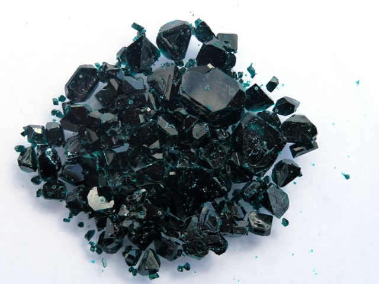

Nel blog ci vuole ogni tanto uno stacchetto, magari d'arte (una musica, un'immagine...).
La prossima volta metterò una musica, oggi... guardate che meraviglia questi cristalli!
Un paio di mesi fa, quando faceva particolarmente freddo e fare sintesi laboriose nel mio gelido lab sarebbe stato puro autolesionismo, avevo preparato senza tanto dispendio energetico un po' di propionato di rame, così, per pura curiosità verso un sale sicuramente abbastanza singolare.
Sono partito da acido propionico e carbonato basico di rame, sfruttando il semplice spostamento:
CuCO3 + 2 CH3-CH2-COOH --> (CH3-CH2-COO)2Cu + H2O + CO2
Visto che non avevo fretta, ho poi fatto cristallizzare molto lentamente la soluzione ottenuta, in poco meno di due mesi e ad una temperatura media bassa.

Nelle giuste condizioni questo sale si accresce con buona soddisfazione ed è risultato molto bello anche nell'aspetto, con un verde profondissimo, praticamente nero, con dei riflessi verdi che si intravvedono dove i cristalli sono più sottili.

Dato che noi ammiriamo l'arte e l'estetica anche nella chimica (eccome!), mi permetto di proporre queste immagini come fossero piccoli quadri, fatti dalla natura.
4 commenti